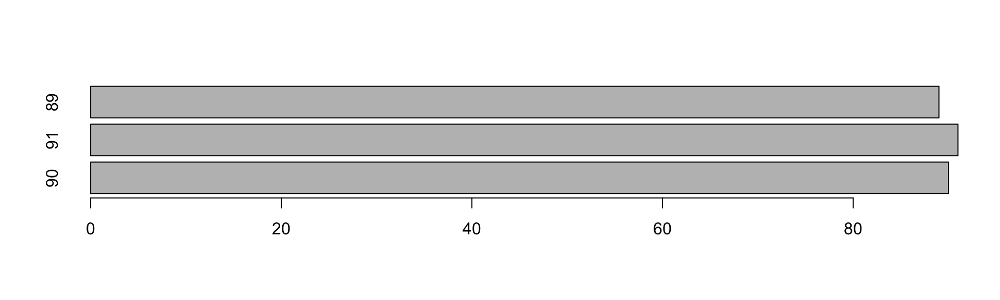

Curso Auditoria de Dados - Estudo de Caso
Flávio Brito
23/10/2016
- 1 Arquivos
- 2 Arquivo e sua Estrutura
- 3 Limpando fomatações
- 4 Tratamento para o campo Data
- 5 Verifica quais CNPJ aparecem mais de uma vez
- 6 Quais os CNPJ que não aparecem repetidamente
- 7 Testes de Consistência
- 8 Agregação
- 9 Teste de sequencias
- 10 Resumo do Data Frame
- 11 Aprofundando nos Testes de Possíveis Fraudes
1 Arquivos
#Retirando um data frame da memória
nf <- NULL
#Lendo o arquivo no padrão csv com separador ; e criando o data frame nf
nf <- read.csv(file="~/Documents/NotaFiscal.csv", sep=";",stringsAsFactors = FALSE,na.strings=c("", " ") )2 Arquivo e sua Estrutura
#Arquivo
print(nf)## CNPJ UF Data NF Classificacao Valor
## 1 21.704.783/0001-64 RJ 01/09/2016 90 ME R$30.000,00
## 2 21.704.783/0001-64 RJ 02/09/2016 91 ME R$40.000,00
## 3 03.117.734/0001-43 SP 03/09/2016 2000 MEI R$444,00
## 4 76.313.316/0001-03 SP 04/09/2016 111 MEI R$4,00
## 5 06.062.510/0001-70 SP 05/09/2016 222 <NA> R$4.444,00
## 6 16.474.789/0001-52 GO 06/09/2016 33333 <NA> R$55,00
## 7 84.846.156/0001-88 GO 07/09/2016 4444444 MEI R$667,00
## 8 49.740.886/0001-07 MA 08/09/2016 555 SA R$666,00
## 9 49.740.886/0001-07 MA 09/09/2016 400 <NA> R$7.777,00
## 10 21.704.783/0001-64 ES 10/09/2016 89 MEI R$8.888.888,00# Quantas linhas?
nrow(nf)## [1] 10# Quantas colunas?
ncol(nf)## [1] 6#Qual a dimensão do data frame?
dim(nf)## [1] 10 6#Estrutura
str(nf)## 'data.frame': 10 obs. of 6 variables:
## $ CNPJ : chr "21.704.783/0001-64" "21.704.783/0001-64" "03.117.734/0001-43" "76.313.316/0001-03" ...
## $ UF : chr "RJ" "RJ" "SP" "SP" ...
## $ Data : chr "01/09/2016" "02/09/2016" "03/09/2016" "04/09/2016" ...
## $ NF : int 90 91 2000 111 222 33333 4444444 555 400 89
## $ Classificacao: chr "ME" "ME" "MEI" "MEI" ...
## $ Valor : chr " R$30.000,00 " " R$40.000,00 " " R$444,00 " " R$4,00 " ...#Existem NA?
any(is.na(nf))## [1] TRUE#Removendo NA
nf_sem_NA <- na.omit(nf)
print(nf_sem_NA)## CNPJ UF Data NF Classificacao Valor
## 1 21.704.783/0001-64 RJ 01/09/2016 90 ME R$30.000,00
## 2 21.704.783/0001-64 RJ 02/09/2016 91 ME R$40.000,00
## 3 03.117.734/0001-43 SP 03/09/2016 2000 MEI R$444,00
## 4 76.313.316/0001-03 SP 04/09/2016 111 MEI R$4,00
## 7 84.846.156/0001-88 GO 07/09/2016 4444444 MEI R$667,00
## 8 49.740.886/0001-07 MA 08/09/2016 555 SA R$666,00
## 10 21.704.783/0001-64 ES 10/09/2016 89 MEI R$8.888.888,00max(nf_sem_NA$Data)## [1] "10/09/2016"3 Limpando fomatações
3.1 Limpa CNPJ
#nf$CNPJ <- gsub("[[:punct:]]","",nf$CNPJ)
gsub("[[:punct:]]","",nf$CNPJ)## [1] "21704783000164" "21704783000164" "03117734000143" "76313316000103"
## [5] "06062510000170" "16474789000152" "84846156000188" "49740886000107"
## [9] "49740886000107" "21704783000164"3.2 Limpa caracteres especiais do campo Valor
#Exibe o tipo do atributo antes da mudan?a
class(nf$Valor)## [1] "character"nf$Valor <- trimws(gsub("[R$.]","",nf$Valor))
nf$Valor <- as.numeric(gsub(",",".", nf$Valor))
#Exibe o tipo do atributo ap?s a coer??o
class(nf$Valor)## [1] "numeric"4 Tratamento para o campo Data
library(lubridate)
nf$Data <-dmy(nf$Data)
nf$Data## [1] "2016-09-01 UTC" "2016-09-02 UTC" "2016-09-03 UTC" "2016-09-04 UTC"
## [5] "2016-09-05 UTC" "2016-09-06 UTC" "2016-09-07 UTC" "2016-09-08 UTC"
## [9] "2016-09-09 UTC" "2016-09-10 UTC"5 Verifica quais CNPJ aparecem mais de uma vez
nf[duplicated(nf$CNPJ),] #(Repare bem nos valores!!!)## CNPJ UF Data NF Classificacao Valor
## 2 21.704.783/0001-64 RJ 2016-09-02 91 ME 40000
## 9 49.740.886/0001-07 MA 2016-09-09 400 <NA> 7777
## 10 21.704.783/0001-64 ES 2016-09-10 89 MEI 88888886 Quais os CNPJ que não aparecem repetidamente
nf[!duplicated(nf$CNPJ),]## CNPJ UF Data NF Classificacao Valor
## 1 21.704.783/0001-64 RJ 2016-09-01 90 ME 30000
## 3 03.117.734/0001-43 SP 2016-09-03 2000 MEI 444
## 4 76.313.316/0001-03 SP 2016-09-04 111 MEI 4
## 5 06.062.510/0001-70 SP 2016-09-05 222 <NA> 4444
## 6 16.474.789/0001-52 GO 2016-09-06 33333 <NA> 55
## 7 84.846.156/0001-88 GO 2016-09-07 4444444 MEI 667
## 8 49.740.886/0001-07 MA 2016-09-08 555 SA 666unique(nf$CNPJ)## [1] "21.704.783/0001-64" "03.117.734/0001-43" "76.313.316/0001-03"
## [4] "06.062.510/0001-70" "16.474.789/0001-52" "84.846.156/0001-88"
## [7] "49.740.886/0001-07"nf$CNPJ## [1] "21.704.783/0001-64" "21.704.783/0001-64" "03.117.734/0001-43"
## [4] "76.313.316/0001-03" "06.062.510/0001-70" "16.474.789/0001-52"
## [7] "84.846.156/0001-88" "49.740.886/0001-07" "49.740.886/0001-07"
## [10] "21.704.783/0001-64"7 Testes de Consistência
7.1 Registros duplicados
library(sqldf)## Loading required package: gsubfn## Loading required package: proto## Loading required package: RSQLite## Loading required package: DBIsqldf("select * from nf group by CNPJ having count(*) >1")## Loading required package: tcltk## CNPJ UF Data NF Classificacao Valor
## 1 21.704.783/0001-64 ES 2016-09-09 21:00:00 89 MEI 8888888
## 2 49.740.886/0001-07 MA 2016-09-08 21:00:00 400 <NA> 7777sqldf("select * from nf group by CNPJ, Classificacao having count(*) >1")## CNPJ UF Data NF Classificacao Valor
## 1 21.704.783/0001-64 RJ 2016-09-01 21:00:00 91 ME 40000sqldf("select * from nf group by CNPJ having count(*) = 1")## CNPJ UF Data NF Classificacao Valor
## 1 03.117.734/0001-43 SP 2016-09-02 21:00:00 2000 MEI 444
## 2 06.062.510/0001-70 SP 2016-09-04 21:00:00 222 <NA> 4444
## 3 16.474.789/0001-52 GO 2016-09-05 21:00:00 33333 <NA> 55
## 4 76.313.316/0001-03 SP 2016-09-03 21:00:00 111 MEI 4
## 5 84.846.156/0001-88 GO 2016-09-06 21:00:00 4444444 MEI 667nf[duplicated(nf[1]),]## CNPJ UF Data NF Classificacao Valor
## 2 21.704.783/0001-64 RJ 2016-09-02 91 ME 40000
## 9 49.740.886/0001-07 MA 2016-09-09 400 <NA> 7777
## 10 21.704.783/0001-64 ES 2016-09-10 89 MEI 8888888nf[duplicated(nf[c(1,5)]),]## CNPJ UF Data NF Classificacao Valor
## 2 21.704.783/0001-64 RJ 2016-09-02 91 ME 400008 Agregação
## Soma dos Valores das NF por CNPJ
aggregate(Valor~CNPJ, nf, sum)## CNPJ Valor
## 1 03.117.734/0001-43 444
## 2 06.062.510/0001-70 4444
## 3 16.474.789/0001-52 55
## 4 21.704.783/0001-64 8958888
## 5 49.740.886/0001-07 8443
## 6 76.313.316/0001-03 4
## 7 84.846.156/0001-88 667## Soma dos Valores das NF por CNPJ e Data
aggregate(Valor~CNPJ + Data, nf, sum)## CNPJ Data Valor
## 1 21.704.783/0001-64 2016-09-01 30000
## 2 21.704.783/0001-64 2016-09-02 40000
## 3 03.117.734/0001-43 2016-09-03 444
## 4 76.313.316/0001-03 2016-09-04 4
## 5 06.062.510/0001-70 2016-09-05 4444
## 6 16.474.789/0001-52 2016-09-06 55
## 7 84.846.156/0001-88 2016-09-07 667
## 8 49.740.886/0001-07 2016-09-08 666
## 9 49.740.886/0001-07 2016-09-09 7777
## 10 21.704.783/0001-64 2016-09-10 88888888.1 Agrupando usando SQL em Data Frames
#Agrupar por CNPJ
sqldf("SELECT CNPJ,SUM(Valor) AS Soma FROM nf GROUP BY CNPJ")## CNPJ Soma
## 1 03.117.734/0001-43 444
## 2 06.062.510/0001-70 4444
## 3 16.474.789/0001-52 55
## 4 21.704.783/0001-64 8958888
## 5 49.740.886/0001-07 8443
## 6 76.313.316/0001-03 4
## 7 84.846.156/0001-88 667sqldf("SELECT CNPJ,SUM(Valor) AS Soma FROM nf GROUP BY CNPJ LIMIT 5")## CNPJ Soma
## 1 03.117.734/0001-43 444
## 2 06.062.510/0001-70 4444
## 3 16.474.789/0001-52 55
## 4 21.704.783/0001-64 8958888
## 5 49.740.886/0001-07 8443#Agrupar por CNPJ e Data
sqldf("SELECT CNPJ,SUM(Valor) AS Soma FROM nf GROUP BY CNPJ, Data")## CNPJ Soma
## 1 03.117.734/0001-43 444
## 2 06.062.510/0001-70 4444
## 3 16.474.789/0001-52 55
## 4 21.704.783/0001-64 30000
## 5 21.704.783/0001-64 40000
## 6 21.704.783/0001-64 8888888
## 7 49.740.886/0001-07 666
## 8 49.740.886/0001-07 7777
## 9 76.313.316/0001-03 4
## 10 84.846.156/0001-88 667#Agrupar por CNPJ e M?s (extra??o)
sqldf("SELECT CNPJ,SUM(Valor) AS Soma FROM nf GROUP BY CNPJ, strftime('%m', Data)")## CNPJ Soma
## 1 03.117.734/0001-43 444
## 2 06.062.510/0001-70 4444
## 3 16.474.789/0001-52 55
## 4 21.704.783/0001-64 8958888
## 5 49.740.886/0001-07 8443
## 6 76.313.316/0001-03 4
## 7 84.846.156/0001-88 6678.2 Somar dos Valores agrupados por CNPJ - (xtabs)
xtabs(Valor~CNPJ, nf)## CNPJ
## 03.117.734/0001-43 06.062.510/0001-70 16.474.789/0001-52
## 444 4444 55
## 21.704.783/0001-64 49.740.886/0001-07 76.313.316/0001-03
## 8958888 8443 4
## 84.846.156/0001-88
## 6679 Teste de sequencias
na.strings=c("", " ")
nf[,c(1,3:4)]## CNPJ Data NF
## 1 21.704.783/0001-64 2016-09-01 90
## 2 21.704.783/0001-64 2016-09-02 91
## 3 03.117.734/0001-43 2016-09-03 2000
## 4 76.313.316/0001-03 2016-09-04 111
## 5 06.062.510/0001-70 2016-09-05 222
## 6 16.474.789/0001-52 2016-09-06 33333
## 7 84.846.156/0001-88 2016-09-07 4444444
## 8 49.740.886/0001-07 2016-09-08 555
## 9 49.740.886/0001-07 2016-09-09 400
## 10 21.704.783/0001-64 2016-09-10 899.1 Ordenação de registros
9.1.1 Sintaxe SQL
# Utilizando a sintaxe de SQL do pacote sqldf
nf_seq <-sqldf("SELECT a.*, COUNT(*) count
FROM nf a, nf b
WHERE a.CNPJ = b.CNPJ
AND b.NF >= a.NF
AND b.Data >= b.Data
GROUP BY a.Data
ORDER BY b.CNPJ, b.Data, b.NF")
print(nf_seq)## CNPJ UF Data NF Classificacao Valor
## 1 03.117.734/0001-43 SP 2016-09-02 21:00:00 2000 MEI 444
## 2 06.062.510/0001-70 SP 2016-09-04 21:00:00 222 <NA> 4444
## 3 16.474.789/0001-52 GO 2016-09-05 21:00:00 33333 <NA> 55
## 4 21.704.783/0001-64 RJ 2016-08-31 21:00:00 90 ME 30000
## 5 21.704.783/0001-64 RJ 2016-09-01 21:00:00 91 ME 40000
## 6 21.704.783/0001-64 ES 2016-09-09 21:00:00 89 MEI 8888888
## 7 49.740.886/0001-07 MA 2016-09-07 21:00:00 555 SA 666
## 8 49.740.886/0001-07 MA 2016-09-08 21:00:00 400 <NA> 7777
## 9 76.313.316/0001-03 SP 2016-09-03 21:00:00 111 MEI 4
## 10 84.846.156/0001-88 GO 2016-09-06 21:00:00 4444444 MEI 667
## count
## 1 1
## 2 1
## 3 1
## 4 2
## 5 1
## 6 3
## 7 1
## 8 2
## 9 1
## 10 19.1.2 Sintaxe Vetorial
#Ordena o dataframe por CNPJ e Data
nf[order(nf[,1], nf[,3],nf[,4]), ]## CNPJ UF Data NF Classificacao Valor
## 3 03.117.734/0001-43 SP 2016-09-03 2000 MEI 444
## 5 06.062.510/0001-70 SP 2016-09-05 222 <NA> 4444
## 6 16.474.789/0001-52 GO 2016-09-06 33333 <NA> 55
## 1 21.704.783/0001-64 RJ 2016-09-01 90 ME 30000
## 2 21.704.783/0001-64 RJ 2016-09-02 91 ME 40000
## 10 21.704.783/0001-64 ES 2016-09-10 89 MEI 8888888
## 8 49.740.886/0001-07 MA 2016-09-08 555 SA 666
## 9 49.740.886/0001-07 MA 2016-09-09 400 <NA> 7777
## 4 76.313.316/0001-03 SP 2016-09-04 111 MEI 4
## 7 84.846.156/0001-88 GO 2016-09-07 4444444 MEI 667#Ordena e seleciona os atributos CNPJ, Data e NF de um determinado contribuinte
nf_valida_seq <- nf[order(nf[,1], nf[,3],nf[,4]) & nf$CNPJ=="21.704.783/0001-64",]
# Verifica se as NF estão em sequência
nf_valida_seq## CNPJ UF Data NF Classificacao Valor
## 1 21.704.783/0001-64 RJ 2016-09-01 90 ME 30000
## 2 21.704.783/0001-64 RJ 2016-09-02 91 ME 40000
## 10 21.704.783/0001-64 ES 2016-09-10 89 MEI 8888888#Lista a sequência de NF
nf_valida_seq$NF## [1] 90 91 89#Lista as diferenças entre as NF ordenadas por Data
diff(nf_valida_seq$NF) ## [1] 1 -2#Lista sequência resultante do teste
diff(nf_valida_seq$NF) <=0## [1] FALSE TRUE#Verifica se a soma da diferença é positiva e verdadeira
sum((diff(nf_valida_seq$NF) <=0) == TRUE)## [1] 1#Verifica visualmente se as NF estão em sequencia
barplot(nf_valida_seq$NF, horiz = TRUE, names.arg=nf_valida_seq$NF)
#Trocando o número da Nota do CNPJ "49.740.886/0001-07" cujo valor é 7777 para 557
nf$NF[nf$CNPJ=="49.740.886/0001-07"]## [1] 555 400nf$NF[nf$CNPJ=="49.740.886/0001-07" & nf$Valor=="7777"] <- 400
nf[order(nf[,1], nf[,3],nf[,4]) & nf$CNPJ=="49.740.886/0001-07",]## CNPJ UF Data NF Classificacao Valor
## 8 49.740.886/0001-07 MA 2016-09-08 555 SA 666
## 9 49.740.886/0001-07 MA 2016-09-09 400 <NA> 7777nf_valida_seq <- nf[order(nf[,1], nf[,3],nf[,4]) & nf$CNPJ=="49.740.886/0001-07",]
# Verifica se as NF est?o em sequ?ncia
nf_valida_seq## CNPJ UF Data NF Classificacao Valor
## 8 49.740.886/0001-07 MA 2016-09-08 555 SA 666
## 9 49.740.886/0001-07 MA 2016-09-09 400 <NA> 7777sum((diff(nf_valida_seq$NF) <=0) == TRUE)## [1] 1#Visualização Gráfica
barplot(nf_valida_seq$NF, horiz = TRUE, names.arg=nf_valida_seq$NF)
#Trocando o número da Nota do CNPJ "49.740.886/0001-07" cujo valor é 7777 para 557
nf$NF[nf$CNPJ=="49.740.886/0001-07"]## [1] 555 400nf$NF[nf$CNPJ=="49.740.886/0001-07" & nf$Valor=="7777"] <- 557
#Testando novamente a auditoria da sequencia
nf[order(nf[,1], nf[,3],nf[,4]) & nf$CNPJ=="49.740.886/0001-07",]## CNPJ UF Data NF Classificacao Valor
## 8 49.740.886/0001-07 MA 2016-09-08 555 SA 666
## 9 49.740.886/0001-07 MA 2016-09-09 557 <NA> 7777nf_valida_seq <- nf[order(nf[,1], nf[,3],nf[,4]) & nf$CNPJ=="49.740.886/0001-07",]
# Verifica se as NF est?o em sequ?ncia
nf_valida_seq## CNPJ UF Data NF Classificacao Valor
## 8 49.740.886/0001-07 MA 2016-09-08 555 SA 666
## 9 49.740.886/0001-07 MA 2016-09-09 557 <NA> 7777sum((diff(nf_valida_seq$NF) <=0) == TRUE)## [1] 0#Visualização Gráfica
barplot(nf_valida_seq$NF, horiz = TRUE, names.arg=nf_valida_seq$NF)
#Validando
nf_valida_seq <- nf[order(nf[,1], nf[,3],nf[,4]) & nf$CNPJ=="49.740.886/0001-07",]
nf_valida_seq## CNPJ UF Data NF Classificacao Valor
## 8 49.740.886/0001-07 MA 2016-09-08 555 SA 666
## 9 49.740.886/0001-07 MA 2016-09-09 557 <NA> 7777sum((diff(nf_valida_seq$NF) <=0) == TRUE)## [1] 0#Visualizaçãoo Gráfica
barplot(nf_valida_seq$NF, horiz = TRUE, names.arg=nf_valida_seq$NF)
#Dataframe com 3 colunas
nf_valida_seq <- nf[order(nf[,1], nf[,3],nf[,4]),]
nf_valida_seq## CNPJ UF Data NF Classificacao Valor
## 3 03.117.734/0001-43 SP 2016-09-03 2000 MEI 444
## 5 06.062.510/0001-70 SP 2016-09-05 222 <NA> 4444
## 6 16.474.789/0001-52 GO 2016-09-06 33333 <NA> 55
## 1 21.704.783/0001-64 RJ 2016-09-01 90 ME 30000
## 2 21.704.783/0001-64 RJ 2016-09-02 91 ME 40000
## 10 21.704.783/0001-64 ES 2016-09-10 89 MEI 8888888
## 8 49.740.886/0001-07 MA 2016-09-08 555 SA 666
## 9 49.740.886/0001-07 MA 2016-09-09 557 <NA> 7777
## 4 76.313.316/0001-03 SP 2016-09-04 111 MEI 4
## 7 84.846.156/0001-88 GO 2016-09-07 4444444 MEI 66710 Resumo do Data Frame
summary(nf)## CNPJ UF Data
## Length:10 Length:10 Min. :2016-09-01 00:00:00
## Class :character Class :character 1st Qu.:2016-09-03 06:00:00
## Mode :character Mode :character Median :2016-09-05 12:00:00
## Mean :2016-09-05 12:00:00
## 3rd Qu.:2016-09-07 18:00:00
## Max. :2016-09-10 00:00:00
## NF Classificacao Valor
## Min. : 89 Length:10 Min. : 4
## 1st Qu.: 96 Class :character 1st Qu.: 500
## Median : 388 Mode :character Median : 2556
## Mean : 448149 Mean : 897294
## 3rd Qu.: 1639 3rd Qu.: 24444
## Max. :4444444 Max. :8888888summary(nf$Valor)## Min. 1st Qu. Median Mean 3rd Qu. Max.
## 4 500 2556 897300 24440 888900011 Aprofundando nos Testes de Possíveis Fraudes
#Carrega arquivo de Impostos Pagos
nf_recolhidas <- read.csv(file="~/Documents/Recolhimento.csv", sep=";",stringsAsFactors = FALSE,na.strings=c("", " ") )
#Verificar se o registro dos impostos recolhidos a maior
# Processa o campo Valor
nf_recolhidas$Valor <- trimws(gsub("[R$.]","",nf_recolhidas$Valor))
nf_recolhidas$Valor <- as.numeric(gsub(",",".", nf_recolhidas$Valor))
nf_recolhidas$Recolhimento <- trimws(gsub("[R$.]","",nf_recolhidas$Recolhimento))
nf_recolhidas$Recolhimento <- as.numeric(gsub(",",".", nf_recolhidas$Recolhimento))
#Cria um Data Frame com limite de Auditoria
nf_limite <- aggregate(Valor ~ CNPJ, data=nf_recolhidas, function(x)2*mean(x))
head(nf_limite)## CNPJ Valor
## 1 03.117.734/0001-43 888
## 2 06.062.510/0001-70 8888
## 3 16.474.789/0001-52 110
## 4 21.704.783/0001-64 5972592
## 5 49.740.886/0001-07 8443
## 6 76.313.316/0001-03 8#Data frame unindo os DF das NF com informações sobre impostos recolhidos e o arquivo com os limites de auditoria
impostos_recolhidos <- merge(nf_recolhidas, nf_limite, by="CNPJ")
head(impostos_recolhidos)## CNPJ NF Recolhimento Valor.x Data_Recolhimento Valor.y
## 1 03.117.734/0001-43 2000 79.92 444 17/09/16 888
## 2 06.062.510/0001-70 222 799.92 4444 19/09/16 8888
## 3 16.474.789/0001-52 33333 9.90 55 <NA> 110
## 4 21.704.783/0001-64 90 5400.00 30000 15/09/16 5972592
## 5 21.704.783/0001-64 91 7200.00 40000 16/09/16 5972592
## 6 21.704.783/0001-64 89 1599999.84 8888888 24/09/16 5972592#Compara os Valores Informados com os Valores utilizados para Pgto de Impostos
registro_audit <- subset(impostos_recolhidos, Valor.x > Valor.y)
#Lista os registros candidatos a serem auditados em detalhe
print(registro_audit)## CNPJ NF Recolhimento Valor.x Data_Recolhimento Valor.y
## 6 21.704.783/0001-64 89 1600000 8888888 24/09/16 5972592##Indica o número de Registros candidatos a auditoria detalhada
nrow(registro_audit)## [1] 1#Escrevendo o data frame com os registros sob suspeita no disco no padrão CSV
write.csv2(registro_audit,file="~/Documents/Registros_Possiveis_Fraudes.csv",row.names = FALSE, quote = FALSE)